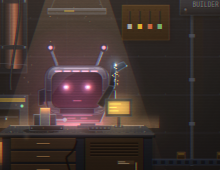
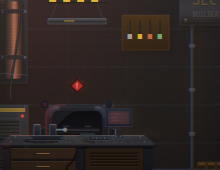
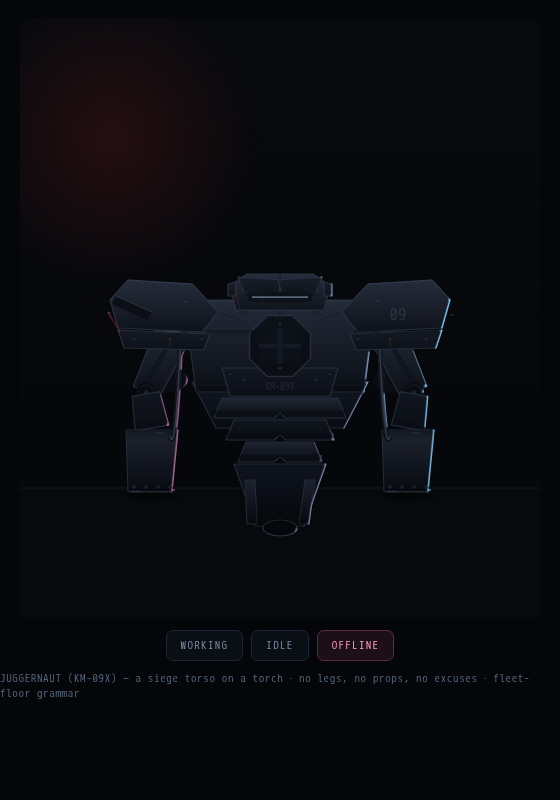
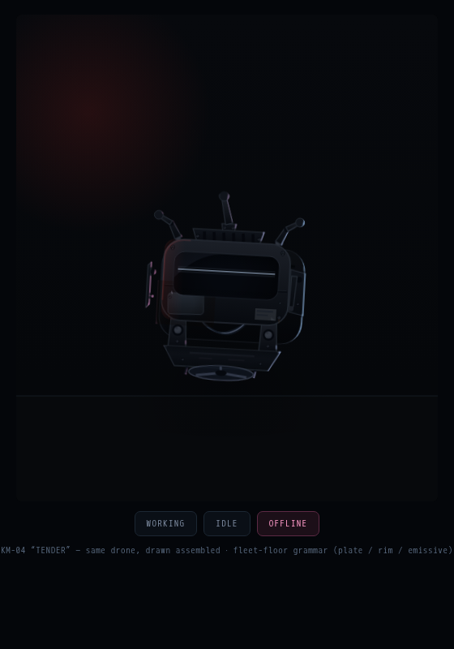
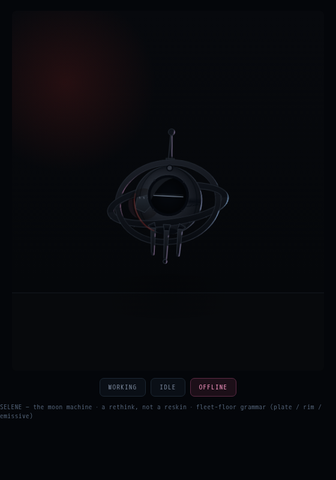
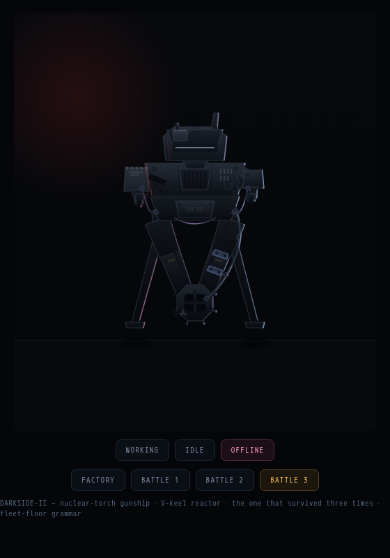
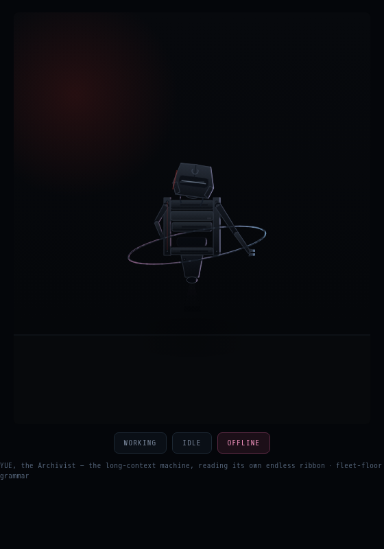

how should kimi be represented — two prototypes
current unit vs. proto A “KM-04 TENDER” (evolution) vs. B “SELENE” vs. C “YUE, the Archivist” (new) · fleet-floor grammar · working / offline
working · t=8s
offline
current
fleet-floor main
rounded-rect drone
· single-primitive
silhouette
· face carries
everything

current — working

current — offline (sags behind station)
proto E
“JUGGERNAUT”
the challenger
· siege torso on a torch
· caged chest reactor
· hammer gauntlets,
A-stance
· knuckle-rest when dead

E — offline (fists on the deck)
proto A
“KM-04 TENDER”
same drone,
drawn assembled
· gimbal window
· ducted repulsor
· two shells +
service history

A — offline (dead-man's roll, rotors stopped)
proto B
“SELENE”
the rethink
· moon-phase face
is the state readout
· gimbal rings lose
lock when dead
· gravity lens hover

B — offline (new moon, rings at rest)
proto D2
“DARKSIDE-II”
the veteran, rebuilt
· portrait nuclear-torch
gunship, V-keel reactor
· 3 battle passes: scars
+ heavier upgrades
· lands a ton on
outriggers when dead

D2 — working (battle 3)

D2 — offline (torch dead, on outriggers)
proto C
“YUE, the Archivist”
entirely new
· torso is a rack of
memory cartridges
· reads an endless
ribbon of context
· ribbon hangs slack
when dead

C — offline (ribbon slack, head bowed)